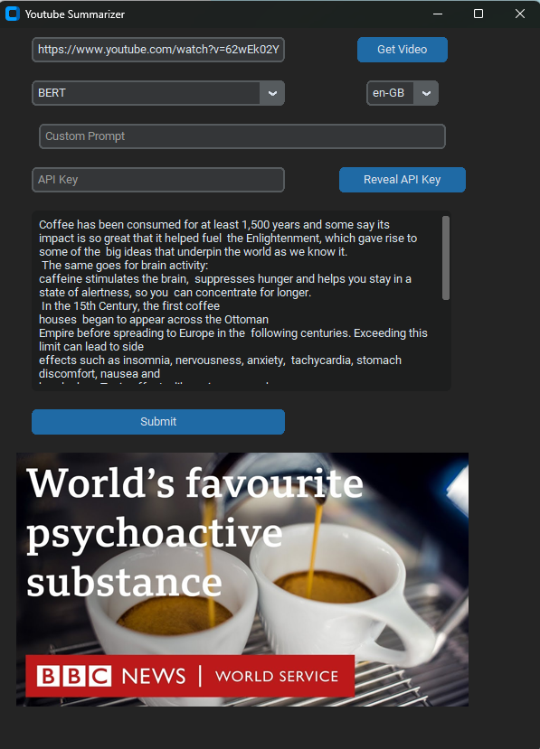
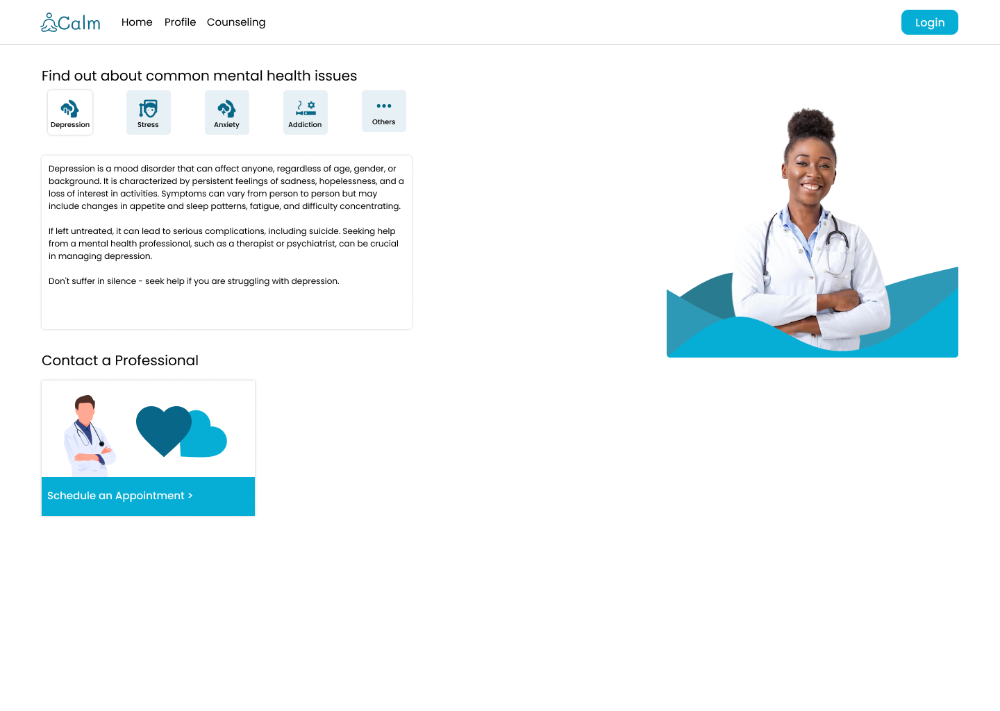
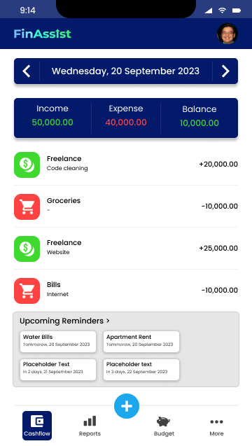
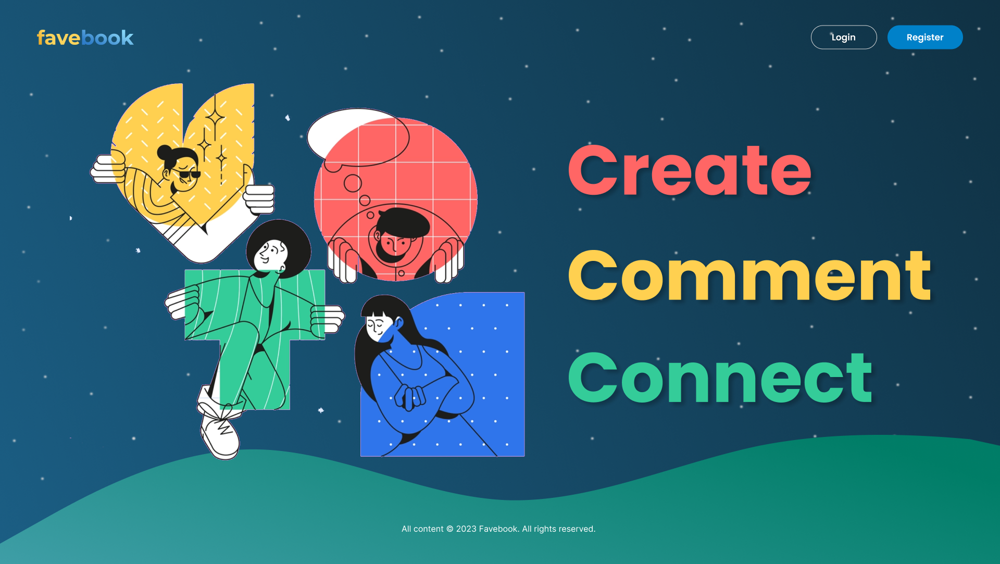
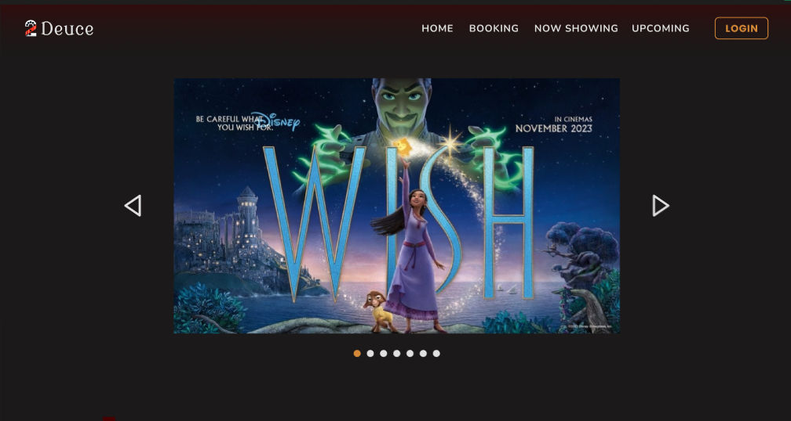
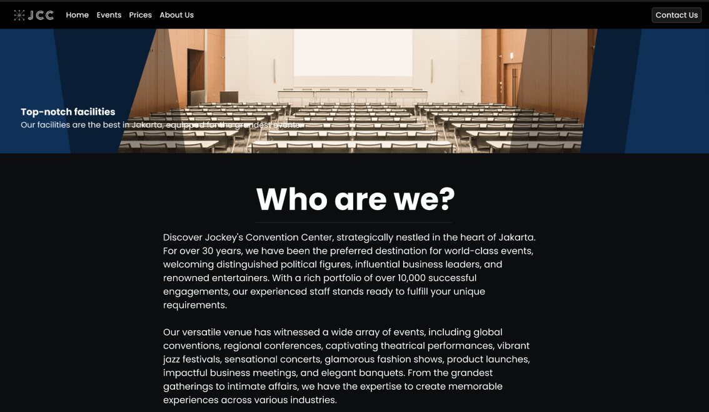

Works
-
Evaluating Ensemble Learning and Neural Network Models Towards Covid-19 Detection Through Cough Recordings
Description: This study focuses on analyzing cough sounds, which correlate with COVID-19, to guide researchers in selecting appropriate machine learning models.
-

YouTube Video Summarizer
Description: A tool developed to save users time by summarizing the transcript of lengthy YouTube videos. Users can choose between different summarization models such as Google Gemini, SpaCy, or BERT.
Tools & Technologies Used: Python, CustomTKinter for GUI, Google Gemini API, SpaCy and various AI models (BERT). -

Indosine
Description: Indosine is a website aimed at preserving traditional Indonesian cuisine by assisting users in discovering recipes by region and available ingredients. The project promotes cultural heritage while simplifying the cooking experience.
Tools & Technologies Used: ReactJS was used for building a dynamic user interface, and the mockup was created using Figma. -

Calm
Description: Calm is a website designed to promote mental health and provide users with easy access to professional consultations. It serves as a platform for users to learn about mental health, connect with experts, and book sessions.
Tools & Technologies Used: Mocked up using Figma for a clear and friendly user interface that encourages usability and engagement. -

EZMusicYT
Description: EZMusicYT is a tool for backing up favorite videos and music from YouTube. It utilizes the official YouTube API along with Python libraries to create a user-friendly interface for downloading videos and managing offline content.
Tools & Technologies Used: Developed in Python, with a user interface created using CustomTKinter. The project involved working with YouTube API for video retrieval. -

FinAssist
Description: FinAssist is an application developed to help users manage their finances effectively. It allows users to track expenses, categorize spending, and plan budgets in an intuitive manner.
Tools & Technologies Used: Designed using Figma, focusing on usability to make complex financial management tasks simple and accessible for non-financial users. -

Favebook
Description: Favebook is a platform designed to connect people by allowing them to create, share, and comment on each other's content. It aims to foster community interaction and user-generated content.
Tools & Technologies Used: Developed the front-end using HTML, CSS, JavaScript, and Figma for the initial design and prototyping. -

IBB Auto Image Uploader
Description: The IBB Auto Image Uploader is a Python-based tool designed to automatically upload images from a specific directory to an ImgBB account using its API. Created to streamline and simplify uploading images from a local system.
View Github
Tools & Technologies Used: Mocked up using Figma for a clear and friendly user interface that encourages usability and engagement. -

2Deuce
Description: 2Deuce is a cinema website aimed at enhancing user experience when browsing movie information and purchasing tickets. The design focuses on intuitive navigation, detailed movie information, and easy ticket booking.
View Mockup
Tools & Technologies Used: Created using Figma to ensure an appealing and easy-to-use interface that allows users to seamlessly find movies, view showtimes, and purchase tickets online. -

Jockey's Conference Center
Description: Jockey's Conference Center is a website designed to showcase conference room facilities, amenities, and event management options for a business venue. The project focuses on creating an accessible interface that provides potential clients with all the information they need to book events.
View Mockup
Tools & Technologies Used: Designed using Figma, with an emphasis on presenting venue features clearly, ensuring a professional and organized layout that is easy for users to navigate. -

Simple Calculator
Description: A simple calculator built as part of an advanced web development bootcamp. This project was an exercise in creating a functional, reusable calculator interface using TypeScript and React.
View Github
Tools & Technologies Used: Developed using React and TypeScript to ensure type safety and component reusability.